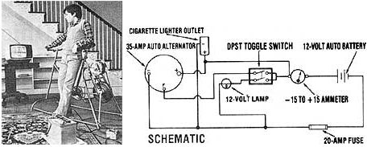

Combine a bicycle, a battery, and an automobile alternator... and you can pedal up some watts in your own home with a bicycle generator!
In the last issue of this publication (MOTHER NO. 67) we showed you how to turn a bicycle into a stable mechanical power source that could readily be connected to a number of different tools, and then we proceeded to describe how you might hook the unit to a water pump. Now, as promised in that first installment, we're going to tell you how to use a bicycle to generate electricity... by combining the cycle-power chassis and an automotive alternator.
As is often the case in research, while we were busy designing the new package, our team made a few improvements to the original setup. Foremost was the addition of a flywheel, which has helped to stabilize the pulses that are produced by the thrusts of the rider's legs.
We decided to use a junked Volkswagen flywheel for a number of different reasons: First, we had one lying around the shop ... second, it has a flat surface, next to the ring gear, upon which a belt can ride ... and third, the unit's onepiece construction (which includes anondetachable ring gear) and recessed face make the VW bug part nearly impossible to repair, a fact that has made numbers of used flywheels available for next to nothing.
To install the steel disk, we simply welded it-centered-on our Raleigh's rear hub. Then, in order to provide clearance for the flywheel, we had to relocate the rear frame braces. The upper 19-1/2" conduit crosspiece was moved 5 inches-to a point 24-1/2 inches up the frame tubes-and we added two braces, which run between the axle ends and the bolts that connect the horizontal and vertical frame members. The combination has increased the chassis's rigidity.
Furthermore, the roughly 12"-diameter disk allows for a greater ratio increase than did the old chain and 6" pulley system. In fact-after experimenting with different drive pulley sizes on the alternator-we've found that our new flywheel, teamed with the stock 3" pulley, seems to provide a close-to-ideal ratio.
Attaching the car alternator to our cycle-power frame involved only minor modifications to the basic bicycle unit. A 6" piece of 1" angle iron was bolted to the angle iron braces on the chassis, and brackets were then fashioned to allow the generator to pivot (to provide belt tensioning capability). Then we attached an 18"-piece of all-thread to one of the alternator's mounting bosses, and slipped the other end through a hole in a steel tab bolted to the column that supports the bike's seat. By threading two nuts up or down the all-thread, we can quickly adjust the belt's tightness.
Wiring the system proved to be easier than we had anticipated. Since we couldn't find a pedaler who was capable of raising the output above 13.5 volts, we simply discarded the voltage regulator we'd initially added to the system. Just follow the accompanying schematic to wire your own unit. (The essential components amount to nothing more than a positive connection between the battery and the alternator, a wire connecting the negative terminals, and a field wire that can be switched on or off.)
Though the basis of the circuit is quite simple, we did decide to offer you a couple of refinements which-while not absolutely necessary-are certainly convenient. First, we wired a very low-wattage bulb into the field circuit to indicate when field current is flowing. (Beware... leaving the switch on will discharge the battery through the field windings.) To prevent the bulb from being blown by surge when the circuit is shut off, the fixture is wired parallel to the field, through a dual pole, single throw (DPST) switch. Another optional item in our schematic is the car ammeter, the readings of which can be either an inspiration or a conveyor of bad news ... depending on your enthusiasm for pedaling.
"Well," you're probably wondering, "can I generate all my household's electricity with a bicycle?" And the answer is yes, if you have many family members who are in excellent physical condition... and if you don't use much electricity. The maximum that our most experienced cyclist was able to produce was 16 amps at 13.5 volts-a little over 200 watts-but he could maintain that torrid pace for only a few minutes. A practical figure for continuous pedaling is 5 amps at 12.5 volts ... or about 60 watts.
Parents-such as the folks mentioned in this issue's Energy Flashes column-who wish to limit their children's television time by making the youngsters produce the electricity for the tube should know that our unit will require roughly a minute's pedaling for every two minutes of watching a small 25-watt, 12-volt TV. (Note: The generating must be done beforehand and the electricity stored in the battery, since the power surges that are produced by erratic pedaling will disturb the television's picture and can be damaging to its electronic components.)
A wide variety of 12-volt appliances (we used auto cigarette lighter plugs to avoid mixing low voltage and AC devices) can be served by the bicycle generator and battery setup. And the storage capacity of the cells will actually allow you to operate equipment-for limited periods-that draws more than you're able to produce. But remember, every watt that's removed from the battery will eventually have to be replaced, and the use of a power-hungry 1,200-watt tool or appliance for one hour will necessitate at least 20 total hours of pedaling to restore the battery's charge.
Despite its limitations, a bicycle generator can be a practical addition to an energy-conserving household. After all, it's not uncommon for people to spend hours pedaling an exercise bicycle that produces nothing but heat through friction ... why not have your workout and generate usable electricity at the same time?
EDITOR'S NOTE: Information on ordering back issues - including MOTHER NO. 67. which featured the instructions for building our cycle-power chassis - appears on page 148.
|
 STAFF PHOTO Plan for the bicycle generator. Yes, you can use pedal power to provide electricity to a TV! |
|
|